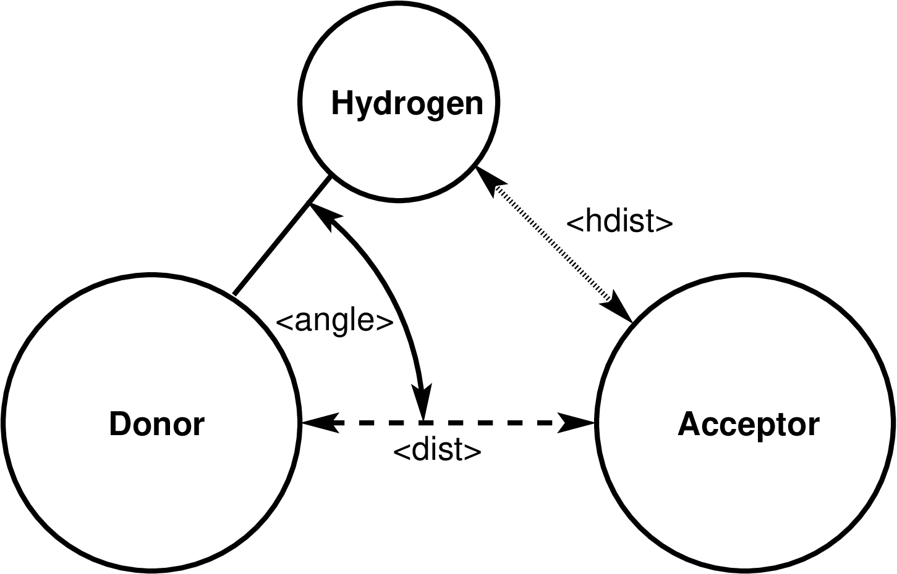

\(\renewcommand{\AA}{\text{Å}}\)
compute hbond/local command
Syntax
compute ID group-ID hbond/local rcut acut dgroup-ID agroup-ID hgroup-ID value1 value2 ...
ID, group-ID are documented in compute command
hbond/local = style name of this compute command
rcut = distance cutoff between hydrogen bond donor and acceptor (distance units)
acut = angle cutoff for the hydrogen - donor - acceptor angle (degrees)
dgroup-ID = group-ID of the hydrogen bond donor atoms
agroup-ID = group-ID of the hydrogen bond acceptor atoms
hgroup-ID = group-ID of the hydrogen bond hydrogen atoms
zero or more values may be appended to select which additional properties to compute and provide
value = dist or angle or hdist or ehb
dist = distance between hydrogen bond donor and acceptor atom (distance units) angle = hydrogen - donor - acceptor angle (degrees) hdist = distance between hydrogen bond hydrogen and acceptor atom (distance units) ehb = hydrogen bond strength (energy units)
zero or more keyword/value pair may be appended
keyword = ecut
ecut value = minimum hydrogen bond strength cutoff (energy units)
Examples
compute hb all hbond/local 3.2 30.0 dgroup agroup hgroup
compute hb all hbond/local 3.2 30.0 oxygen oxygen hydrogen dist hdist angle ehb ecut 1.5
Description
Added in version 11Feb2026.
Define a computation that determines the number of hydrogen bonds and computes some related properties according to the provided parameters. To be counted as a hydrogen bond the following conditions have to be met
the donor atom has to be in the group dgroup-ID
the acceptor atom has to be in the group agroup-ID
the hydrogen atom has to be in the group hgroup-ID
all three atoms have to be in the compute group
the hydrogen atom has to be connected to the donor with a bond
the donor - acceptor distance has to be less than rcut
the hydrogen - donor - acceptor angle has to be less than acut

Diagram of the hydrogen bond definition for compute hbond/local
The following values can be computed and output.
The dist value is the current distance between the hydrogen bond donor and acceptor atom in distance units
The angle value is the current hydrogen-donor-acceptor angle in degrees
The hdist value is the current distance between the hydrogen atom and hydrogen bond acceptor atom in distance units
The ehb value is the hydrogen bond strength computed as the sum of the pairwise potential energy between a) the donor atom and the acceptor atom, and b) the hydrogen atom and the acceptor atom. This is a positive value for an attractive interaction.
If the ecut keyword is used, an additional energy cutoff is applied. The computed hydrogen bond strength must be larger than the ecut value or else the potential hydrogen bond is not counted as such. The energy cutoff is otherwise not applied.
Restrictions for computing ehb and applying ecut
Computing the hydrogen bond strength and applying an energy cutoff for hydrogen bonds requires that the pair_style in use is capable of computing pair-wise energies. This is usually available for lj/cut/coul/cut or similar but not for most many-body and machine learning force fields.
If a kspace solver is used, this energy only contains the real-space contributions. But since the distances between the atoms are small, the missing long-range contribution should be small, too.
Output info
This compute calculates a global scalar (the number of detected hydrogen bonds summed over all MPI processes) and a local array containing in its columns in this order: the atom-ID of the hydrogen bond hydrogen atom, the atom-ID of the hydrogen bond donor atom, the atom-ID of the hydrogen bond acceptor atom, followed by the properties in the order they were selected in the compute command line. To avoid double counting, hydrogen bonds are only counted and their information stored on the MPI process where the hydrogen bond donor atom is a local atom; hydrogen and acceptor atoms may be ghost atoms. The number of columns is thus three plus the number of selected value to compute and store. The array can be accessed by any command that uses local data.
As an example, the commands shown below can be added to the
examples/rdf-adf/in.spce example input file to compute and output
the hydrogen bond information of the compute for a bulk water system in
multiple ways.
group ogroup type 1
group hgroup type 2
variable nmol equal count(ogroup)
# water oxygen atoms are both hydrogen bond donor and acceptor
compute hb all hbond/local 3.3 30.0 ogroup ogroup hgroup dist hdist angle ehb
# output all hydrogen bonds. each line contains: hydrogen-ID donor-ID acceptor-ID r_DA r_HA theta_HDA e_hb
dump hb all local 100 hbonds.dump c_hb[*]
dump_modify hb label "HBONDS" colname 1 Hydrogen colname 2 " Donor " colname 3 Acceptor &
colname 4 " r_DA " colname 5 " r_HA " colname 6 " theta " colname 7 " e_hb" &
format line "%20.0f %8.0f %8.0f %8.3f %8.3f %8.3f %8.3f"
# for the number of hydrogen bonds per molecule we must multiply by 2
# since water oxygens are in equal parts hydrogen bond donor and acceptor
variable nhb_mol equal 2.0*c_hb/${nmol}
# get average values for distances, angles and strength for the current step
compute avg all reduce ave c_hb[4] c_hb[5] c_hb[6] c_hb[7] inputs local
# get running average of those values
fix ave all ave/time 100 1 100 v_nhb_mol c_avg[1] c_avg[2] c_avg[3] c_avg[4] ave running
# get histogram of hydrogen bond distance
fix dhist all ave/histo 100 100 10000 2.3 3.3 30 c_hb[4] file hbond_histo_dist.dat mode vector kind local
# get histogram of hydrogen bond angle
fix ahist all ave/histo 100 100 10000 0.0 30.0 30 c_hb[6] file hbond_histo_angle.dat mode vector kind local
# get histogram of hydrogen bond strength
fix ahist all ave/histo 100 100 10000 -11.0 1.0 30 c_hb[7] file hbond_histo_eng.dat mode vector kind local
# output computed global data as thermo output, first for current step, then running averages
thermo_style custom step temp press v_nhb_mol c_avg[*] f_ave[*]
thermo_modify colname 4 "n_HB/mol" colname 5 "r_DA " colname 6 "r_HA " colname 7 "theta_HDA" colname 8 "e_HB " &
colname 9 "<n_HB/mol>" colname 10 "<r_DA> " colname 11 "<r_HA> " colname 12 "<theta_HDA>" colname 13 "<e_HB> "
thermo 100
The dump local command will output the three atom-IDs for hydrogen bond donor, acceptor, and hydrogen atom, then donor-acceptor distance, hydrogen-donor-acceptor angle, hydrogen-acceptor distance, and hydrogen bond strength for the hydrogen bond. The custom thermo output includes the number of hydrogen bonds per molecule and the distances and angles averaged over the system and then over time.
See the Visualize LAMMPS snapshots page for examples of visualizing the computed hydrogen bonds with dump image.
The local data stored by this command is generated by three nested loops: the outer loop is over all atoms that are in the compute group and in the donor atom group, the middle loop is over all 1-2 neighbors of potential donor atoms that also are included in the compute group and the hydrogen atom group, the inner loop is over all non-bonded neighbors of the potential donor atoms that also match the compute group and the acceptor atom group. For any atom triple that matches all conditions, the donor-acceptor distance is computed and the hydrogen-donor-acceptor angle and if both are smaller than the corresponding cutoff values from the command line, the hydrogen bond is counted and its information stored. If requested, additional properties are computed and stored in the local array. Both atoms of each non-bonded pair are tried for being a hydrogen bond donor and acceptor.
Note that as atoms migrate from processor to processor, there will be no consistent ordering of the entries within the local array from one timestep to the next.
The output for dist and hdist will be in distance units. The output for angle will be in degrees. The output for ehb will be in energy units.
Dump image info
Compute hbond/local can be used with the compute keyword of dump image. The compute will add arrows based on the detected hydrogen bonds in the compute group to dump image so that they are included in the rendered image.
The color of the arrows is by default that of the hydrogen bond donor atom when using color styles “type” or “element”. With color style “const” the default value of “white” can be changed using dump_modify ccolor. The transparency is by default fully opaque and can be changed with dump_modify ctrans.
The cflag1 setting allows to adjust the length of the arrow. This allows for example to shrink the arrows so that the tip would otherwise be (partially) obscured by the sphere representing the hydrogen bond acceptor atom. Thus it is recommended to use a negative value of at least the atom diameter.
The cflag2 setting allows you to adjust the radius of the rendered arrows. Since the radius of the arrows is not known by the compute and thus set to 0, it is recommended to set this flag to a value > 0.
Restrictions
This compute is part of the EXTRA-COMPUTE package. It is only enabled if LAMMPS was built with that package. See the Build package page for more info.
This compute requires that the hydrogen atom of a hydrogen bond is bound to the donor atom with an explicit bond. It cannot be used with pair styles like reaxff where bonds are implicit.
To compute the hydrogen bond strength, the pair style must support computation of pair-wise forces and energies, which is generally not available for many-body and machine learning potentials.
Default
ecut = off, default outputs are the atom-IDs (in this order) for hydrogen bond hydrogen atom, donor atom, and acceptor atom.